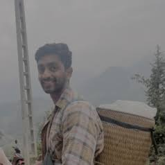
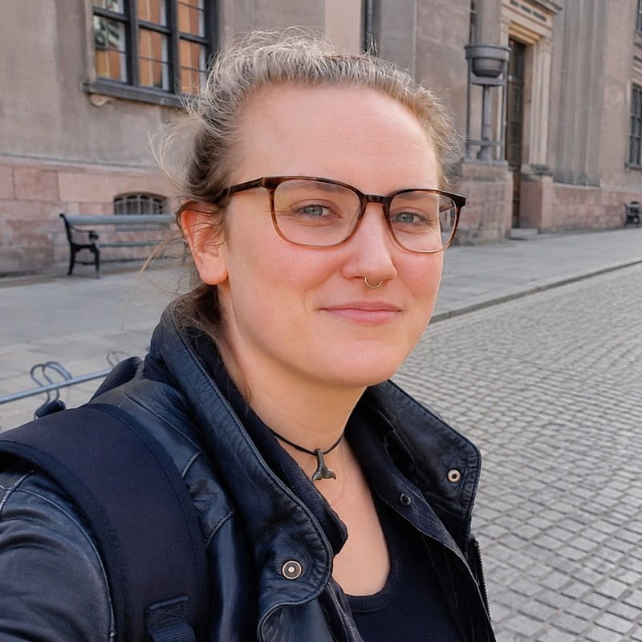
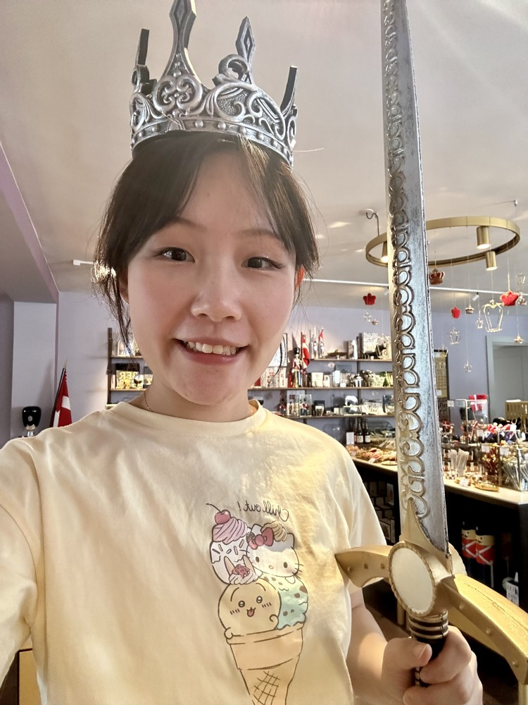

Shyamsundar Ravishankar
Postdoc
Shyamsundar har en ph.d. fra University of Adelaide og er specialiseret i gammelt DNA og populationsgenetik.
LinkedInMennesker og samarbejde
Vi undersøger fortidens økosystemer gennem gammelt miljø-DNA og kombinerer ekspertise inden for feltarbejde, laboratorieanalyser og bioinformatik.
Gruppen ledes af Mikkel Winther Pedersen på Globe Institute ved Københavns Universitet.

Postdoc
Shyamsundar har en ph.d. fra University of Adelaide og er specialiseret i gammelt DNA og populationsgenetik.
LinkedIn
Postdoc
Nicola udvikler og er ekspert i metoder til analyse af gammelt miljø-DNA.
LinkedIn
Postdoc
Michelle er geograf med en ph.d. fra McGill University og ekspert i analyse af miljø-DNA fra søsedimenter.
LinkedIn
Postdoc
Nare undersøger fortidens akvatiske økosystemer og biodiversitet ved hjælp af fiskefossiler og gammelt DNA fra søsedimenter.
KU-profil
Postdoc
Hannah har en ph.d. fra DTU og er specialiseret i bakterier og gammelt miljø-DNA.
LinkedInKontakt os om samarbejde, studieprojekter og forskningsspørgsmål.